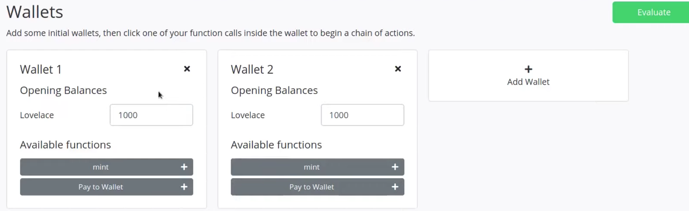
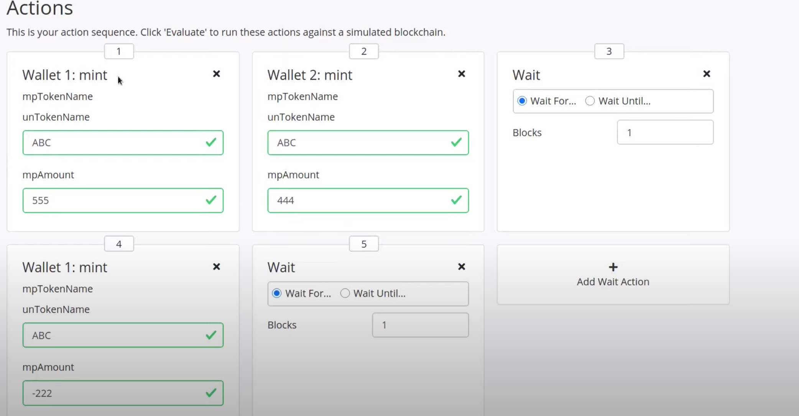
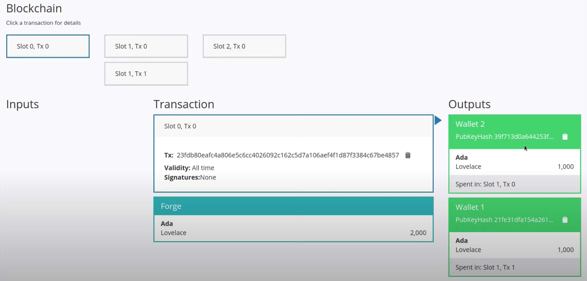
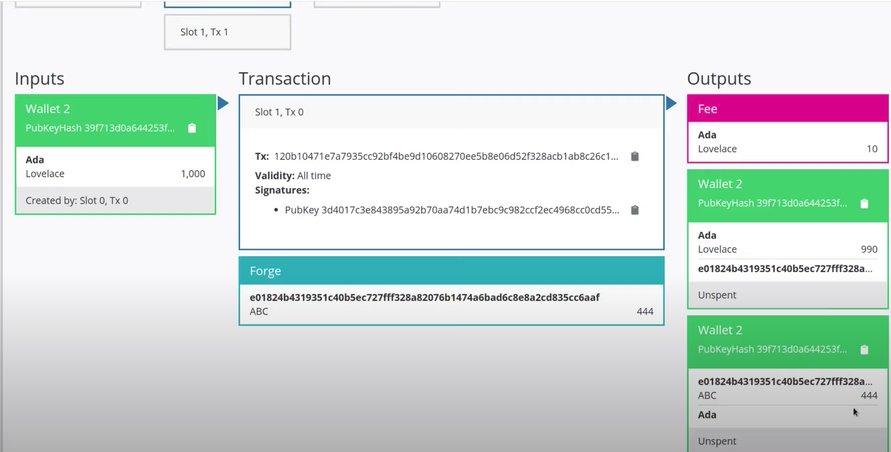
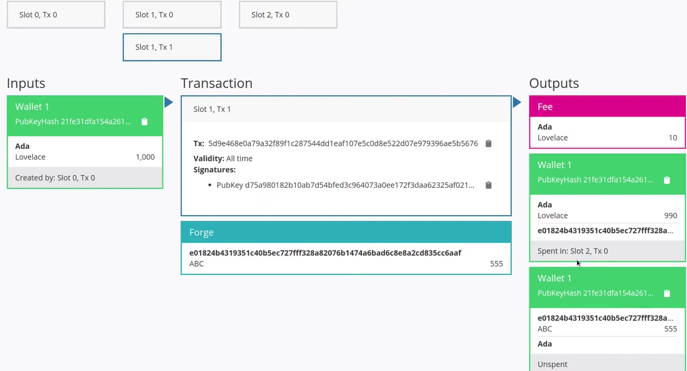
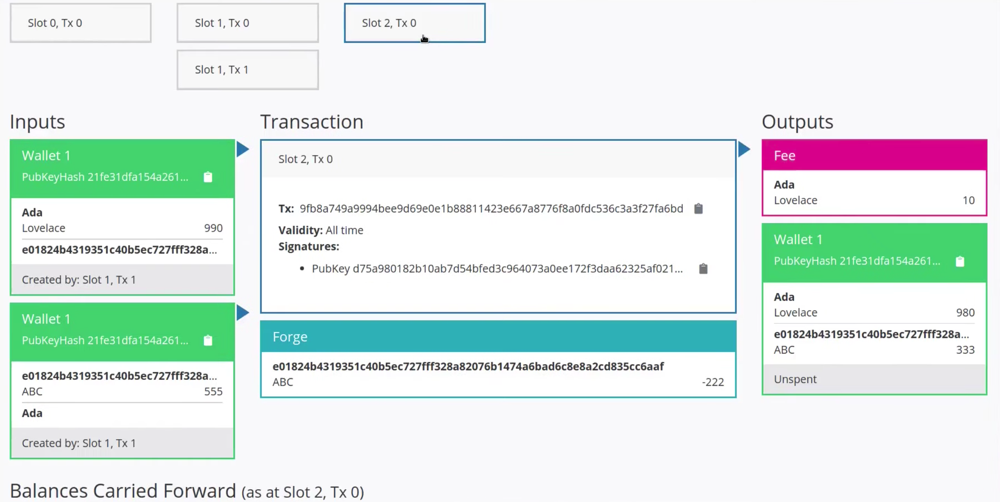
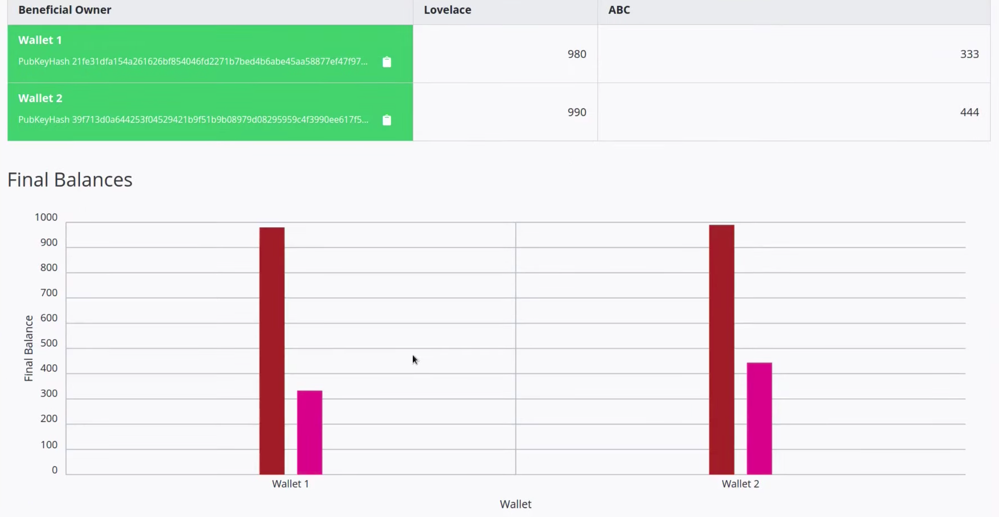
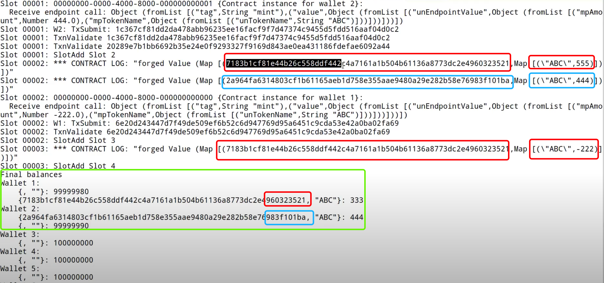
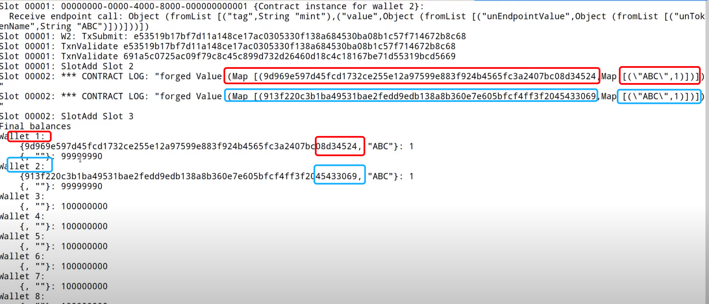

本节主要介绍本机令牌制作
类型
Values
1 |
|
类型使用示例
1 | -- λ > import Plutus.V1.Ledger.Value |
Native Token
本机代币是一项新功能，可以在Cardano上进行多资产交易。用户可以使用ada和本机无限数量的用户定义(自定义)代币进行交易。
本机支持为开发人员提供了明显的优势: 例如，无需创建智能合约来处理自定义代币，因为分类账可以处理所有与代币相关的功能，因此这消除了一层增加的复杂性和潜在的人工错误。
铸造策略
铸造策略是一组规则，用于管理该策略范围内的资产的铸造和燃烧。铸造策略的重点是指定铸造(或烧掉)token的条件。
例如，规则可以指定谁通过铸造和烧掉来控制资产供应。
铸造策略由要创建新资产的用户定义。例如，用户可能希望只允许自己铸造某种特定种类的token,这将在策略中指定。
在处理交易时，节点会通过运行代码或检查相关签名来检查对铸造策略的遵守情况。交易必须遵守交易试图铸造的所有资产的所有铸造策略。
简单的铸造策略
铸造策略涉及到的一些类型:1
2
3
4
5
6
7
8
9
10
11
12
13
14
15
16
17
18
19
20
21
22
23
24
25
26
27
28
29
30
31data ScriptContext = ScriptContext {
scriptContextTxInfo :: TxInfo,
-- 脚本用途
scriptContextPurpose :: ScriptPurpose
}
-- 当前正在运行的脚本的用途
data ScriptPurpose
= Minting CurrencySymbol -- ^ 铸造
| Spending TxOutRef
| Rewarding StakingCredential
| Certifying DCert
data TxInfo = TxInfo
{ txInfoInputs :: [TxInInfo] -- ^ Transaction inputs
, txInfoOutputs :: [TxOut] -- ^ Transaction outputs
-- 这笔交易支付的费用
, txInfoFee :: Value -- ^ The fee paid by this transaction.
-- 此交易铸造的值
, txInfoForge :: Value -- ^ The 'Value' forged by this transaction.
, txInfoDCert :: [DCert] -- ^ Digests of certificates included in this transaction
, txInfoWdrl :: [(StakingCredential, Integer)] -- ^ Withdrawals
--- 交易的有效范围
, txInfoValidRange :: SlotRange -- ^ The valid range for the transaction.
-- 随着交易提供的签名，证明了他们都签署了tx
, txInfoSignatories :: [PubKeyHash] -- ^ Signatures provided with the transaction, attested that they all signed the tx
, txInfoData :: [(DatumHash, Datum)]
, txInfoId :: TxId
-- ^ Hash of the pending transaction (excluding witnesses)
} deriving (Generic)
打开~/haskell/plutus-pioneer-program/code/week05/src/Week05/Free.hs文件,
该文件实现了一个简单策略(忽略参数)，总是返回true，允许任何钱包执行铸造和烧掉操作:1
2
3
4
5
6
7
8
9
10
11
12
13
14
15
16
17
18
19
20
21
22
23
24
25
26
27
28
29
30
31
32
33
34
35
36
37
38
39
40
41
42
43
44
45
46
47
48
49
50
51
52
53
54
55
56
57
58
59
60
61
62
63
64
65
66
67
68
69
70
71
72
73
74
75
76
77
78
79
80
-- 与mkValidator相似，但是只接收一个ScriptContext参数
mkPolicy :: ScriptContext -> Bool
mkPolicy _ = True
-- 验证脚本
-- validator :: Validator
-- validator = mkValidatorScript $$(PlutusTx.compile [|| mkValidator ||])
-- 实际策略，和验证脚本类似，也是使用PlutusTx.compile
policy :: Scripts.MonetaryPolicy
policy = mkMonetaryPolicyScript $$(PlutusTx.compile [|| Scripts.wrapMonetaryPolicy mkPolicy ||])
-- 获取当前货币符号(输出示例: e01824b4319351c40b5ec727fff328a82076b1474a6bad6c8e8a2cd835cc6aaf)
-- scriptCurrencySymbol :: MonetaryPolicy -> CurrencySymbol
curSymbol :: CurrencySymbol
curSymbol = scriptCurrencySymbol policy
-- 该链下代码允许任意钱包可以铸造或者烧掉相应数量的token
data MintParams = MintParams
{ mpTokenName :: !TokenName -- ^ token名称
, mpAmount :: !Integer -- ^ token数量，为正时标识铸造，为负时标识烧掉
} deriving (Generic, ToJSON, FromJSON, ToSchema)
-- 定义schema
type FreeSchema =
BlockchainActions
.\/ Endpoint "mint" MintParams
-- Contract monad:
-- * 第一个参数标识使用writer monad特性的状态类型(这里使用w标识没有使用它)
-- * 第二个参数是使用的schema(即FreeSchema)，可以进行一些常用的区块链操作，以及可以访问到mint端点
-- * 第三个参数是错误消息的类型
-- * 第四个参数标识合约的return类型，这里使用单元类型
mint :: MintParams -> Contract w FreeSchema Text ()
mint mp = do
-- 创建Value(货币符号/token名称/数量)
let val = Value.singleton curSymbol (mpTokenName mp) (mpAmount mp)
-- 使用货币策略脚本查找值
lookups = Constraints.monetaryPolicy policy
-- 以声明方式定义要构造的交易应该具备的某些条件，
-- 然后Plutus库会自动构建一个满足所有这些条件的交易(如果可能的话)
-- mustForgeValue标识该交易必须铸造该值(`val`)
tx = Constraints.mustForgeValue val
-- 构建满足约束的交易，然后将其提交到网络
ledgerTx <- submitTxConstraintsWith @Void lookups tx
-- 等待确认
void $ awaitTxConfirmed $ txId ledgerTx
Contract.logInfo @String $ printf "forged %s" (show val)
endpoints :: Contract () FreeSchema Text ()
endpoints = mint' >> endpoints
where
mint' = endpoint @"mint" >>= mint
mkSchemaDefinitions ''FreeSchema
mkKnownCurrencies []
-- 测试代码
test :: IO ()
test = runEmulatorTraceIO $ do
let tn = "ABC"
h1 <- activateContractWallet (Wallet 1) endpoints
h2 <- activateContractWallet (Wallet 2) endpoints
callEndpoint @"mint" h1 $ MintParams
{ mpTokenName = tn
, mpAmount = 555
}
callEndpoint @"mint" h2 $ MintParams
{ mpTokenName = tn
, mpAmount = 444
}
void $ Emulator.waitNSlots 1
callEndpoint @"mint" h1 $ MintParams
{ mpTokenName = tn
, mpAmount = -222
}
void $ Emulator.waitNSlots 1
然后我们打开游乐场尝试一下:

如上图所示，我们创建了两个钱包，每个钱包各有1000初始金额, 然后设置如下序列:
- 钱包1铸造
555个ABC代币 - 钱包2铸造
444个ABC代币 - 钱包1烧掉(
burn)222个ABC代币

在Genesis slot的输出中可以看到钱包1和钱包2分别得到了1000初始金额：

在Slot 1, Tx 0阶段，钱包2执行了铸造操作，可以看到输出中除了10Ada的交易费和990Ada的余额外,还有444个新铸造的ABC:

在Slot 1, Tx 1阶段，钱包1也执行了铸造操作，可以看到输出中除了10Ada的交易费和990Ada的余额外,还有555个新铸造的ABC:

在Slot 2, Tx 0阶段，钱包1执行了烧掉操作，为了烧掉这222个token，必须将它们用作input(输入), 唯一可用的输入就是我们上一步铸造的555个，因此可以看到下图左侧的输入有两个: 一个990Ada的输入用于支付交易费用(10Ada), 另一个555ABC用于执行烧掉操作。最终可以看到输出中除了10Ada的交易费外，还有980Ada和333ABC(在这种情况下，算法将会自动合并输出到一个交易中):

钱包1和钱包2的最终余额如下:

该示例策略不是一个非常有用的货币策略，因为拥有代币的意义在于它代表某种价值。所以，如果任何人在任何时候都可以使用新的代币，那么这个代币就没有什么意义了，下一节我们将看到更实用的铸造策略.
更实用的铸造策略
可能最简单的实用铸币策略是: 货币的铸造和烧掉仅限于由特定公钥散列签名的交易。这类似于现实世界中的央行，例如美元欧元等法币并不是每个人都可以铸造，只能由中央银行铸造，因此从某种意义上讲，这就像是一个中央银行政策，只有某些人可以铸造新的货币或者铸造已存在的货币。
这意味着我们的实用铸造策略需要一个有权利执行铸造和烧掉操作的参数(公钥哈希PubKeyHash)。
打开~/haskell/plutus-pioneer-program/code/week05/src/Week05/Signed.hs文件，该文件与上节示例相比，增加了PubKeyHash参数:
1 |
|
执行测试:

该示例与上一小节很相似，但在上一个示例中我们只有一个货币，每个钱包都可以进行铸造或烧掉。
本节示例的货币被公钥哈希参数化了，这意味着如果两个不同的钱包使用这个合同，那么他们最终会得到不同的货币。
钱包1(红色)和钱包2(蓝色)铸造后，得到了两种不同的资产类别，两种不同的代币。虽然代币名称是相同的ABC，但是它们是完全不同的货币。所以现在钱包1只能铸造或烧掉这个(尾号960323521)，而钱包2只能铸造或烧掉另一个(尾号983f101ba)。
绿色是最终余额信息.
NFT
设置一个deadline(期限)，只允许在期限过去之前铸造一个NFT，然后让最后期限过去，然后保证在期限之后，不会再铸造新的代币。
但是为了确定在期限前只铸造了一个代币，我们需要一个类似blockchain Explorer(区块链浏览器)的东西，必须在区块链上检查这些代币中只有一个是在期限之前铸造的。因此，从这个意义上说，现在cardano上的的NFT不是真的NFT,从此意义上货币符号通过它自身保证了它们是NFT.
现在使用Plutus可以铸造出真正的NFT, 如果知道对应于货币符号的策略脚本，就可以确定只有一个这样的硬币存在，而不必解析。
区块链历史上的每一笔交易都是唯一的，都有一个唯一的ID。这也意味着区块链中的每一个UTXO都有一个不同的ID(交易ID和索引的不同组合)。我们可以利用这个事实来创建真正的NFT.
想法是将一个特定的UTXO命名为我们铸造策略的参数。然后在策略中检查执行铸造的交易是否使用这个特定的UTXO,一旦在这个交易中使用了该UTXO，它就不可能再存在了。所以不可能有另一个交易使用相同的UTXO, 这就保证了在这样的铸造策略下，只能有一个交易使用这个UTXO.
用到的类型 :1
2
3
4
5
6
7
8
9
10
11
12
13
14
15
16
17
18
19
20
21
22
23
24
25
26
27
28-- 交易信息
data TxInfo = TxInfo {
-- 交易输入
txInfoInputs :: [TxInInfo],
txInfoInputsFees :: [TxInInfo],
-- 交易输出
txInfoOutputs :: [TxOut],
txInfoFee :: Value,
-- 交易铸造的Value
txInfoForge :: Value,
txInfoDCert :: [Plutus.V1.Ledger.DCert.DCert],
txInfoWdrl :: [(Plutus.V1.Ledger.Credential.StakingCredential, Integer)],
txInfoValidRange :: SlotRange,
txInfoSignatories :: [PubKeyHash],
txInfoData :: [(DatumHash, Datum)],
txInfoId :: TxId
}
data TxInInfo = TxInInfo {
-- 引用了交易输出, 即utxo标识符
txInInfoOutRef :: TxOutRef,
txInInfoResolved :: TxOut
}
data TxOutRef = TxOutRef {
txOutRefId :: TxId,
txOutRefIdx :: Integer
}
打开~/haskell/plutus-pioneer-program/code/week05/src/Week05/NFT.hs文件
1 |
|
执行测试，我们铸造出来了真正的NFT:

Multi NFT
使用同一个货币符号铸造多个tokenName不同的NFTs:1
2
3
4
5
6
7
8
9
10
11
12
13
14
15
16
17
18
19
20
21
22
23
24
25
26
27
28
29
30
31
32
33
34
35
36
37
38
39
40
41
42
43
44
45
46
47
48
49
50
51
52
53
54
55
56
57
58
59
60
61
62
63
64
65
66
67
68
69
70
mkPolicy :: TxOutRef -> [TokenName] -> ScriptContext -> Bool
mkPolicy oref tns ctx = traceIfFalse "UTxO not consumed" hasUTxO &&
traceIfFalse "wrong amount minted" checkMintedAmount
where
info :: TxInfo
info = scriptContextTxInfo ctx
hasUTxO :: Bool
hasUTxO = elem oref $ txInInfoOutRef <$> txInfoInputs info
checkMintedAmount :: Bool
checkMintedAmount = txInfoForge info == multipleNFTs (ownCurrencySymbol ctx) tns
-- newtype Value = Value {getValue :: PlutusTx.AssocMap.Map
-- CurrencySymbol (PlutusTx.AssocMap.Map TokenName Integer)
-- }
-- λ > :t foldMap
-- foldMap :: (Foldable t, Monoid m) => (a -> m) -> t a -> m
-- λ > foldMap (++ "$") ["a", "b", "c"]
-- "a$b$c$"
multipleNFTs :: CurrencySymbol -> [TokenName] -> Value
multipleNFTs c = foldMap $ flip (singleton c) 1
policy :: TxOutRef -> [TokenName] -> Scripts.MonetaryPolicy
policy oref tns = mkMonetaryPolicyScript $
$$(PlutusTx.compile [|| \oref' tns' -> Scripts.wrapMonetaryPolicy $ mkPolicy oref' tns' ||])
`PlutusTx.applyCode`
PlutusTx.liftCode oref
`PlutusTx.applyCode`
PlutusTx.liftCode tns
curSymbol :: TxOutRef -> [TokenName] -> CurrencySymbol
curSymbol oref tns = scriptCurrencySymbol $ policy oref tns
type NFTSchema =
BlockchainActions
.\/ Endpoint "mint" [TokenName]
mint :: [TokenName] -> Contract w NFTSchema Text ()
mint tns = do
pk <- Contract.ownPubKey
utxos <- utxoAt (pubKeyAddress pk)
let utxoKeys = Map.keys utxos
when (null utxoKeys) $ Contract.throwError @Text "no utxo found"
let oref:_ = utxoKeys
--
val = multipleNFTs (curSymbol oref tns) tns
lookups = Constraints.monetaryPolicy (policy oref tns) <> Constraints.unspentOutputs utxos
tx = Constraints.mustForgeValue val <> Constraints.mustSpendPubKeyOutput oref
ledgerTx <- submitTxConstraintsWith @Void lookups tx
void $ awaitTxConfirmed $ txId ledgerTx
Contract.logInfo @String $ printf "forged %s" (show val)
endpoints :: Contract () NFTSchema Text ()
endpoints = mint' >> endpoints
where
mint' = endpoint @"mint" >>= mint
mkSchemaDefinitions ''NFTSchema
mkKnownCurrencies []
test :: IO ()
test = runEmulatorTraceIO $ do
h1 <- activateContractWallet (Wallet 1) endpoints
h2 <- activateContractWallet (Wallet 2) endpoints
callEndpoint @"mint" h1 ["BTC", "ETH", "ADA"]
callEndpoint @"mint" h2 ["BAT", "VET", "DOT"]
void $ Emulator.waitNSlots 1
作业
作业1
如果指定的
PubKeyHash的所有者已对交易进行签名并且未超过指定的截止日期，则此策略应仅允许铸造(或烧掉)代币.
打开~/haskell/plutus-pioneer-program/code/week05/src/Week05/Homework1.hs文件:
1 |
|
作业2
NFT的铸造策略，其中铸造交易必须使用给定的UTxO作为输入，并且TokenName将是空的ByteString
空ByteString:
1 | -- λ > import PlutusTx.Builtins |
打开~/haskell/plutus-pioneer-program/code/week05/src/Week05/Homework2.hs文件:
1 |
|